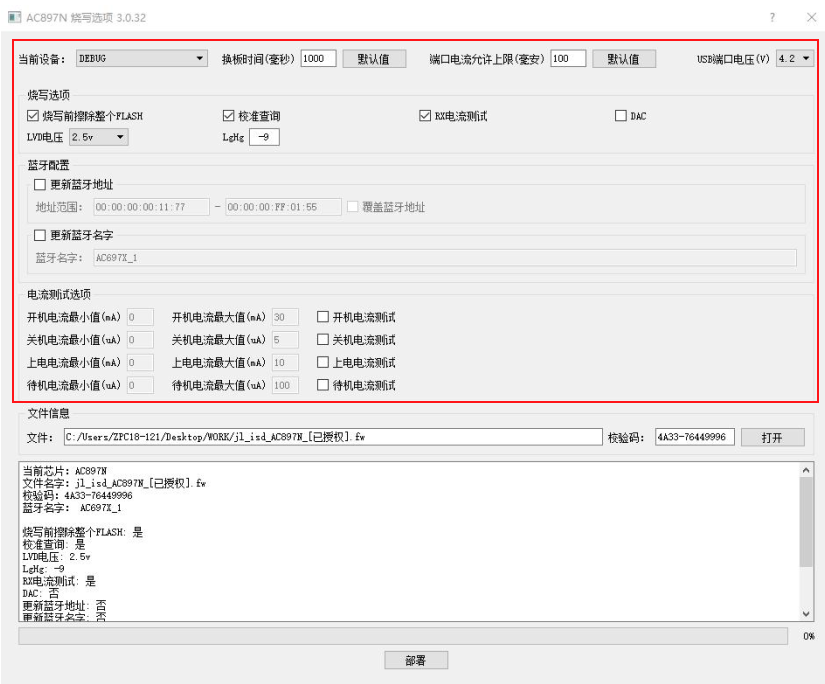

2.5. 各型号芯片PC端烧录配置项介绍
Note
如果希望把这些勾选项固定在 FW/UFW 文件中设置，避免每次部署重新选择，可以参考：如何在生成烧录文件时设置烧录选项
2.5.1. 打开并选择配置项
更新目标芯片烧录程序前，PC端更新程序控制界面有很多可选的或需要配置的配置项，正常情况下默认就好，但也可以根据客户需要进行选择。
例如参考《更新目标芯片程序到烧录器》节内容相关步骤。
打开 V3.0.3 2版本更新AC897N芯片程序的控制界面
可看到的配置项有换板时间、端口电流允许上限、USB端口电压、烧录前擦除整个FLASH、校准查询、RX电流测试、DAC、LVD电压、LgHg、蓝牙配置、电流测试项。
如芯片烧录配置界面所示。
加载目标芯片程序fw文件后对各配置项进行配置，点击部署即可更新目标芯片程序和配置信息到烧录器。

芯片烧录配置界面
Important
不同版本烧录器固件的配置界面可能不一致，请及时更新到最新的烧录器固件。
2.5.2. 各型号芯片常用配置项介绍
不同型号芯片的烧录配置项基本相同，不同芯片的配置项名字一致其实际作用也相同。
以下通过表格的形式对各个系列芯片的一些常用配置项进行介绍说明，烧录时可根据实际需要进行配置。
编号 |
配置项 |
配置项说明 |
|---|---|---|
1 |
换板时间 |
默认设置1000mS，指当前通道烧录成功样机掉线开始到下次开始烧录的时间，小于设置的时间当通道不能进行烧录； |
2 |
端口电流允许上限 |
可设范围：0~300mA，默认设置100mA； |
3 |
USB端口电压 |
可设范围:3.2V~6.3V; |
4 |
烧录前擦除整个FLASH（内置FLASH） |
默认勾选；勾选，芯片是空片或已烧有程序的非空片都会对FLASH进行擦除操作； |
5 |
校准查询 |
默认勾选； |
6 |
RX电流测试 |
勾选，进行蓝牙接收性能测试用于筛选出蓝牙接收参数不达标的芯片 |
7 |
DAC |
勾选，进行音频DAC模块性能测试用于筛选DAC相关参数不达标的芯片; |
8 |
LVD电压 |
配置芯片低电复位的电压值，二次烧录要配置成相同值否则报错不能继续烧录，选择时请结合实际方案和SDK说明进行配置LVD电压 |
9 |
LgHg |
配置参数默认就好；进行蓝牙性能测试，实测参数比设置值小时会报错，用于筛选蓝牙性能不达标的芯片 |
10 |
蓝牙配置 |
更新蓝牙地址：勾选，并输入蓝牙地址范围，烧录芯片时从最小地址按照递增的形式把设置范围内的蓝牙地址烧录到每颗芯片中去； |
11 |
电流测试项 |
可进行上电、开机、待机、关机电流测试，设置正常电流范围值，烧录时筛选电流不达标的芯片； |
12 |
SFC校验 |
根据开发方案选择音箱方案或其他方案， |
13 |
免晶振方案（LRC_TRIM） |
勾选，对无需外挂晶振的芯片进行LRC时钟校准，使用芯片LRC时钟源作为系统时钟 |
14 |
USB/ISP |
勾选，通过ISP模式进行程序烧录，解决烧录时烧录器检测或识别不到样机插入的问题 |
15 |
IQ_TRIM |
勾选，进行蓝牙相关校准参数测试 |
16 |
电池方案 |
根据芯片使用的电池类型对应工作电压，配置芯片低电复位的LVD电压值； |
17 |
样机带电池 |
勾选，可以对已经焊接电池的成品样机进行程序烧录；请参考《样机带电池烧录》节内容； |
18 |
LOOPBACK |
勾选，进行蓝牙性能相关的参数测试，用于筛选参数不达标的芯片 |
19 |
短按复位功能 |
勾选，烧录相应配置值到芯片，使能芯片所对应引脚的短按复位功能； |
20 |
长按复位功能 |
勾选，烧录相应配置值到芯片，将使能芯片对应引脚的长按复位功能； |
21 |
强制更新认证码 |
勾选，非空片烧录时候如芯片内原来已烧录有认证码数据将会被覆盖再烧录一个新的认证码； |
22 |
频偏测试 |
勾选，配合测试盒，在样机芯片程序烧录后进行频偏校准，省去样机单独进行频偏校准的步骤，提高生产效率； |
23 |
BTPLL |
勾选，进行BTPLL时钟参数测试，筛选参数不达标芯片 |
24 |
裸片烧录 |
勾选，烧录直接打黑胶封装形式已经贴片的芯片：此类芯片LVD和VDDIO的电压档位不一样； |
25 |
DACVDD |
勾选，用于筛选芯片DACVDD异常，有杂音的芯片 |
26 |
LNA_BIAS |
勾选，进行蓝牙相关校准参数测试，筛选蓝牙相关参数不达标的芯片 |
27 |
USB筛选模式 |
有正常烧录，严格筛选模式，针对AC695X设计方案是否使用到USB引脚，来选择对应的模式，以筛选USB引脚有问题的芯片 |
28 |
RAM全面测试 |
勾选，全面筛选ram工作异常芯片 |
29 |
MIC测试选项 |
配置项较多，请参考《MIC 测试功能》节内容； |
30 |
擦除VM |
需要不勾选整片擦除选项才能选择该选项； |
31 |
UMDC |
蓝牙相关测试项，默认勾选 |
32 |
释放IO锁存 |
勾选后带电池升级过程会解锁IO状态，芯片全部IO状态会被重置为高阻态 |
33 |
擦除整个外置FLASH |
该选项默认不勾选； |
34 |
关闭HD1(端口1-8) |
该选项只影响一拖八烧录器的8个烧录用USB端口IO状态，主要用于部分治具环境下，样机放在治具上， |
35 |
Flash Lvd电压匹配 |
勾选，对芯片Flash支持的最低工作电压和所选择lvd电压进行匹配性检查； |
36 |
参考源 |
该选项只在勾选免晶振方案（LRC_TRIM） 时才生效，当出现一些样机烧录无法识别或者通信失败时，可以尝试取消该选项进行烧录， |
37 |
是否烧录外部Flash |
当烧录文件中除含有内置FLASH程序以外，还包含有外置FLASH数据及外置FLASH IO配置或只含外置FLASH IO配置时，部署界面 |
38 |
充电使能 |
它是芯片上电初始阶段VBAT的输出控制配置项，默认勾选该选项，有些方案因将VBAT与VDDIO连接在一起， |
39 |
USB_VCC |
该选项默认为灰色无效状态，它包含两个下拉选择项，分别为ON和OFF，只有在勾选【样机带电池】或【USB-样机带电池】情况下才变为有效可选项， |
40 |
MAC/认证码（EFUSE） |
该选项是将认证码或者MAC地址写入EFUSE，一般用于FLASH方案，在FLASH容量不够时，此时可以将MAC地址或者 |
41 |
跳过校准项 |
因为有些型号芯片频偏校准值或者像蓝牙名字存放在efuse中，在初次烧录一个FW文件之后，使用蓝牙测试盒再进行频偏校准或 |
42 |
LRC_TRIM(AD15N型号) |
如果样机未带电池，由烧写器控制上下电进行烧录，isd_config.ini配置LRC=-1，且勾选【LRC_TRIM】选项，则会 |
2.5.3. MAC地址与认证码烧写操作说明
2.5.3.1. 关键选项说明
覆盖蓝牙地址：勾选后，样机每烧录成功一次，即消耗一个MAC地址。
强制更新认证码：勾选后，样机每烧录成功一次，即消耗一个认证码。
核心原则：只要确保每台样机最终仅烧录成功一次，消耗的MAC地址（或认证码）数量就与烧录成功的样机数量完全一一对应。烧录失败不影响计数——无论一台样
机此前失败了多少次，只要最终烧录成功，仅消耗一个MAC地址或认证码。
2.5.3.2. 常规烧录场景（治具烧录）
使用治具烧录时，由于存在对同一块板子反复重烧的情况，为避免MAC地址和认证码被重复消耗，通常不勾选【覆盖蓝牙地址】和【强制更新认证码】。
如果使用一拖八烧写器烧录MAC地址或认证码时，需确保最终烧录成功的样机数量与消耗的MAC地址（或认证码）数量完全一一对应。使用烧写器版本为3.1.33版本
及以上，操作要点如下：
烧录成功的样机：因未勾选【覆盖蓝牙地址】和【强制更新认证码】，反复烧录成功也不会重复消耗新的MAC地址或认证码。
烧录失败的样机：反复多次烧录仍失败的，应立即标注并移出当前烧写器，不得留在当前烧写器上继续尝试，也不得随机插入其他通道烧录，
否则会导致样机与MAC地址/认证码数量无法对应。
2.5.3.3. 失败样机的后续处理
烧录失败的样机应统一收集后单独处理，可选以下方式：
使用一台新的烧写器重新部署固件（FW）后再烧录；
或使用已完成本批次统计的烧写器进行处理。
处理时根据烧录内容勾选对应选项：
烧录MAC地址 → 勾选【覆盖蓝牙地址】
烧录认证码 → 勾选【强制更新认证码】
每台样机确保仅烧录成功一次，烧录成功后不再进行二次烧录。